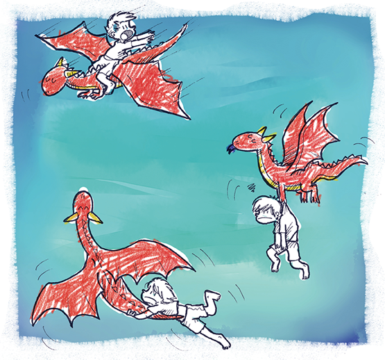

Thomas não desistiu. Mas não havia uma palavra que dissesse que o dragão compreendesse.
Eles desciam ao invés de subir, à direita no lugar da esquerda.
E depois de tanto tempo, em vez de diversão...
...só arrumaram confusão.

Descrição de imagem: Montado no dragão, Thomas estica os braços e olha para um lado enquanto ele voa para outro. No meio, o dragão carrega Thomas pendurado em suas patas. Abaixo, Thomas se agarra à cauda do dragão que está voando. Thomas está com a expressão triste e o dragão parece calmo. Fim da descrição.